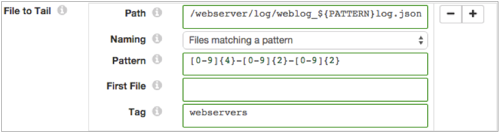

File Tail
Supported pipeline types:
|
The File Tail origin reads lines of data as they are written to an active file after reading related archived files in the same directory. File Tail generates a record for each line of data.
When you configure File Tail, you define the full path to the active file, the naming convention for archived files, and the first archived file to process. These properties determine the set of files that are read and the order of processing.
For example, a File Tail is configured to tail a log called server.log, starting with server.log.1, expecting archived files named in reverse counter order. When the pipeline runs, it starts reading lines from the beginning of server.log.1, ignoring older files. When it reaches the end of server.log.1, it continues processing data in server.log. When it completes reading existing data in server.log, it tails incoming data for the file.
When you stop a pipeline, File Tail notes where it stops reading. When you restart the pipeline, File Tail continues processing from the line where it left off, even if it has been archived to a different file.
You can reset the origin for File Tail. When you reset the origin, the File Tail treats all properties as if you are starting the pipeline for the first time - processing all requested files before continuing to the active file.
File Tail generates record header attributes that enable you to use the origins of a record in pipeline processing.
The origin can generate events for an event stream. For more information about dataflow triggers and the event framework, see Dataflow Triggers Overview.
File Processing and Archived File Names
File Tail processes the active file and archived files based on how the source server generates files. When you specify the naming convention for archived files, File Tail determines the file generation method and processes the data accordingly.
- The server writes data to a single active file and archives files as needed
- The server writes new data to a single file, such as weblog.log. Periodically, it rolls older data from the active file to an archive file, such as weblog.log1 or weblog.log.2015-10-15.
- File Tail can process archived files that use the following naming conventions:
- Active File with Reverse Counter - The server
appends a number to the end of each archived file, such as data.1,
data.2, and so on.
File Tail processes files in reverse numeric order before progressing to the active file.
- Active File with Date - The server appends a date
to the end of the archived file, such as event.log.2015-11,
event.log.2015-12. This method is generally used by Log4j servers.
File Tail provides a set of available date patterns. If the date
pattern of your log files is not available, you might use
Alphabetical.
File Tail processes files in reverse order based on the selected date pattern before progressing to the active file.
 Not valid in Data Collector Edge pipelines. If you configure the origin to use this naming
convention, the origin uses the Active File with Reverse
Counter convention.
Not valid in Data Collector Edge pipelines. If you configure the origin to use this naming
convention, the origin uses the Active File with Reverse
Counter convention. - Active File with Alphabetical - The server
generates files in alphabetically increasing order, such as
file.json.a, file.json.b, file.json.c. You might use this method to
process Apache logs archived with the logrotate utility. You can also
use Alphabetical to process files with appended dates that do not
match the provided date patterns.
File Tail processes files in alphabetical order before progressing to the active file.
Not valid in Data Collector Edge pipelines. If you configure the origin to use this naming
convention, the origin uses the Active File with Reverse
Counter convention.
- Active File with Reverse Counter - The server
appends a number to the end of each archived file, such as data.1,
data.2, and so on.
- The server writes a new active file as needed, archiving the previous file without renaming
- The server writes to an active file, creating a new active file as necessary. When it creates a new active file, it archives the previous active file without renaming it. The active file changes, but file names do not change.
Multiple Paths and File Sets
File Tail can read sets of files in different directories. When File Tail processes different sets of files, it merges all data in the pipeline. If you need to separate the records later, you can use the tag record attribute.
To define a set of files to be processed, you specify the full path to an active file and related properties. You can define additional file sets by configuring a set of properties for each set of files.
- The part of the path before wildcards must exist when the pipeline starts unless
you enable the origin to read from late directories. Use the Allow Late
Directories property to allow reading from late directories.For example, without late directories enabled, the /server/ part of the following directory must exist when you start the pipeline.
/server/*/activity.log - While you can use multiple wildcards in a path, do not use multiple wildcards in
a row.For example, this path is valid:
/user/*/logs/*/log-*.jsonBut the following path does not pass validation because it includes two adjacent wildcards:
/user/*/logs/*/*/log-*.json
First File for Processing
Configure a first file for processing when you want the File Tail origin to ignore one or more existing files in the directory.
When you define a first file to process, File Tail starts processing with the specified file and continues based on the selected naming convention for archived files. When you do not specify a first file, the origin processes all files in the directory based on the naming convention.
Late Directories
You can configure File Tail to read files in late directories - directories that appear after the pipeline starts.
When reading from late directories, File Tail does not validate the directory path when you start the pipeline. If no valid directories exist when the pipeline starts, File Tail waits indefinitely for the appearance of a valid directory and a file to tail.
For example, say you want to tail the following files:
/logs/*/server/*/log.jsonNo valid directory or file exists when you start the pipeline, so File Tail waits until a valid directory and file appears before tailing the file.
This file path allows the origin to tail the files in the following late-arriving directories:
/logs/region1/server/8/log.json
/logs/region2/server/15/log.json
/logs/cloud/server/23/log.jsonFiles Matching a Pattern - Pattern Constant
When you use the Files Matching a Pattern naming option, use the PATTERN constant as a placeholder for the file name pattern. Then you use the Pattern property to define the PATTERN constant.
For example, the following properties process data in files named weblog_<yyyy>-<mm>-<dd>.json and add a "webservers" tag attribute to each record:

Record Header Attributes
The File Tail origin creates record header attributes that include information about the originating file for the record.
You can use the record:attribute or
record:attributeOrDefault functions to access the information
in the attributes. For more information about working with record header attributes,
see Working with Header Attributes.
- filename - Provides the name of the file where the record originated.
- file - Provides the file path and file name where the record originated.
- mtime - Provides the last-modified time for the file.
- offset - Provides the file offset in bytes. The file offset is the location in the file where the record originated.
The origin can also generate a user-defined tag attribute.
Defining and Using a Tag
A tag is an optional record header attribute that you can define for sets of files. In the pipeline, you can use a function to return the value of the tag attribute.
Define a tag attribute so you can easily reference tagged records. Use the Tag property to define a tag for a set of files associated with a path. Note that when you use wildcards or glob patterns in a path to represent several sets of files, those files would all use the same tag.
record:attribute('tag')${record:attribute('tag')='ServerA'}${record:attribute('tag')='ServerB'}Multiple Line Processing
File Tail can process log and text data that includes multiple lines. You might use multiple line processing to include stack traces with log data, or to process MySQL multiline logs.
To process multiline data, you use a regular expression to define the pattern of the standard line. When File Tail encounters data that does not match the pattern, it appends the non-matching data to the previous line.
Evaluating data for the pattern can impact performance, so use multiple line processing only when required.
File Tail Output
File Tail provides data and related metadata through separate output streams.
- Data
- Passes data read from the origin.
- Metadata
-
Important: This functionality will be deprecated in a future release. The record generated by the metadata output is the same as the File Tail event record. Best practice is to connect the metadata output to the Trash destination. Then, to use the event record, configure the origin to generate events. For more information, see Event Generation.
Event Generation
The File Tail origin can generate events that you can use in an event stream. When you enable event generation, the origin generates event records each time the origin starts or completes reading a file.
- With the Email executor to send a custom email
after receiving an event.
For an example, see Sending Email During Pipeline Processing.
- With a destination to store event information.
For an example, see Preserving an Audit Trail of Events.
 In Data Collector Edge pipelines, you can only pass events to destinations for storage. Since Data Collector Edge pipelines do not
support executor stages, you cannot use events to trigger tasks.
In Data Collector Edge pipelines, you can only pass events to destinations for storage. Since Data Collector Edge pipelines do not
support executor stages, you cannot use events to trigger tasks.
For more information about dataflow triggers and the event framework, see Dataflow Triggers Overview.
Event Records
| Field | Description |
|---|---|
| fileName | Name of the file. |
| inode | Index information for the file. |
| time | Time that the event occurred. |
| event | Event that generated the record. Uses one of the following
values:
|
Data Formats
The File Tail origin processes lines of data. The origin handles data differently based on the type of data being processed.
 In Data Collector Edge pipelines,
the origin supports only the JSON and Text data formats.
In Data Collector Edge pipelines,
the origin supports only the JSON and Text data formats.
The File Tail origin processes data formats as follows:
- JSON
- Generates a record for each JSON object. Each JSON object must be written to file as a single line.
- Log
- Generates a record for every log line.
- Text
- Generates a record for each line in the file.
Configuring a File Tail Origin
-
On the File tab, configure the following
properties:
File Property Description File to Tail Directories and sets of files to process. Using simple or bulk edit mode, click the Add icon to enter additional sets of information. Path Full path to the active file to tail. You can use wildcards to define glob patterns. Do not use multiple wildcards in a row. The path before the wildcard must exist unless you enable reading from late directories.
Naming Naming convention for archived files. Select the naming convention that describes how the server generates file names: - Active File with Reverse Counter - File Tail processes files in reverse numeric order before progressing to the active file.
- Active File with Date - File Tail
processes files in reverse order based on the selected
date pattern before progressing to the active file.
Not valid in Data Collector Edge pipelines. If you configure the origin to use this naming
convention, the origin uses the Active File with Reverse
Counter convention.
- Active File with Alphabetical - File
Tail processes files in alphabetical order before
progressing to the active file. Not valid in Data Collector Edge pipelines. If you configure the origin to use this naming
convention, the origin uses the Active File with Reverse
Counter convention.
- Files Matching a Pattern - File Tail processes the files in alphabetical order before progressing to the most recent file - the active file.
Pattern Regular expression that defines the file name pattern used to create files. You can use UNIX-style wildcards, such as an asterisk or question mark.
Available only for the Files Matching a Pattern naming option.
First File Name of the first file to process when you start the pipeline. Use a name that uses the file name pattern. Leave empty to read all files in the directory with the specified naming convention. When you enter a file name, File Tail reads the first file and then progresses to the active file.
When you restart a stopped pipeline, File Tail ignores this property. It starts where it left off regardless of the first file name unless you reset the origin.Tag An optional record header attribute to help differentiate between different sets of records. Maximum Batch Size Maximum number of lines to include in a batch. Honors values up to the Data Collector maximum batch size. Default is 1000. The Data Collector default is 1000.
Batch Wait Time (secs) Number of seconds to wait before sending a batch. Allow Late Directories Allows reading files from directories that appear after the pipeline starts. When enabled, the origin does not validate the file path. -
On the Data Format tab, configure the following
property:
Data Format Property Description Data Format Format of data in the file. Use one of the following data formats: - JSON
- Log
- Text
 In Data Collector Edge pipelines,
the origin supports only the JSON and Text data formats.
In Data Collector Edge pipelines,
the origin supports only the JSON and Text data formats. -
For JSON data, on the Data Format tab, configure the
following properties:
JSON Property Description JSON Content Type of JSON content. Use one of the following options: - Array of Objects
- Multiple Objects
Compression Format The compression format of the files: - None - Processes only uncompressed files.
- Compressed File - Processes files compressed by the supported compression formats.
- Archive - Processes files archived by the supported archive formats.
- Compressed Archive - Processes files archived and compressed by the supported archive and compression formats.
In Data Collector Edge pipelines, the origin
only supports uncompressed and compressed files, not archive or compressed archive
files.File Name Pattern within Compressed Directory For archive and compressed archive files, file name pattern that represents the files to process within the compressed directory. You can use UNIX-style wildcards, such as an asterisk or question mark. For example, *.json. Default is *, which processes all files.
Maximum Object Length (chars) Maximum number of characters in a JSON object. Longer objects are diverted to the pipeline for error handling.
This property can be limited by the Data Collector parser buffer size. For more information, see Maximum Record Size.
Charset Character encoding of the files to be processed. Ignore Control Characters Removes all ASCII control characters except for the tab, line feed, and carriage return characters. -
For text data, on the Data Format tab, configure the
following properties:
Text Property Description Compression Format The compression format of the files: - None - Processes only uncompressed files.
- Compressed File - Processes files compressed by the supported compression formats.
- Archive - Processes files archived by the supported archive formats.
- Compressed Archive - Processes files archived and compressed by the supported archive and compression formats.
In Data Collector Edge pipelines, the origin
only supports uncompressed and compressed files, not archive or compressed archive
files.File Name Pattern within Compressed Directory For archive and compressed archive files, file name pattern that represents the files to process within the compressed directory. You can use UNIX-style wildcards, such as an asterisk or question mark. For example, *.json. Default is *, which processes all files.
Pattern for Multiline Regular expression that defines the pattern for the standard line of text. Max Line Length Maximum number of characters allowed for a line. Longer lines are truncated. Adds a boolean field to the record to indicate if it was truncated. The field name is Truncated.
This property can be limited by the Data Collector parser buffer size. For more information, see Maximum Record Size.
Use Custom Delimiter Uses custom delimiters to define records instead of line breaks. Custom Delimiter One or more characters to use to define records. Include Custom Delimiter Includes delimiter characters in the record. Charset Character encoding of the files to be processed. Ignore Control Characters Removes all ASCII control characters except for the tab, line feed, and carriage return characters.